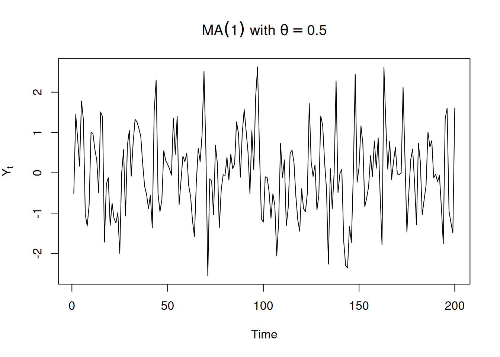
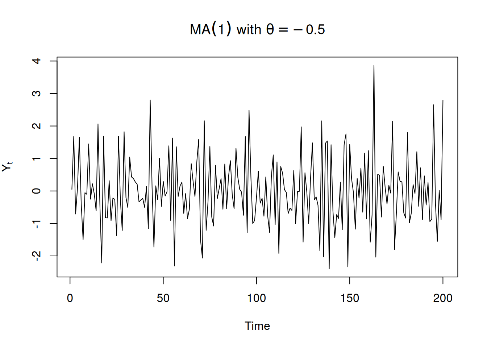
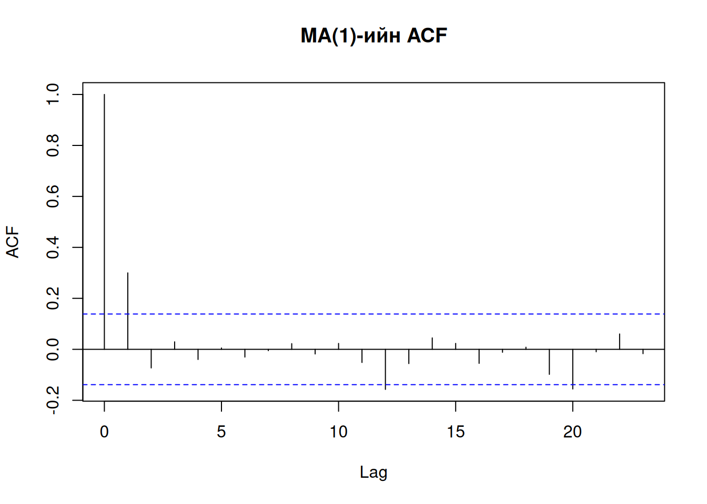
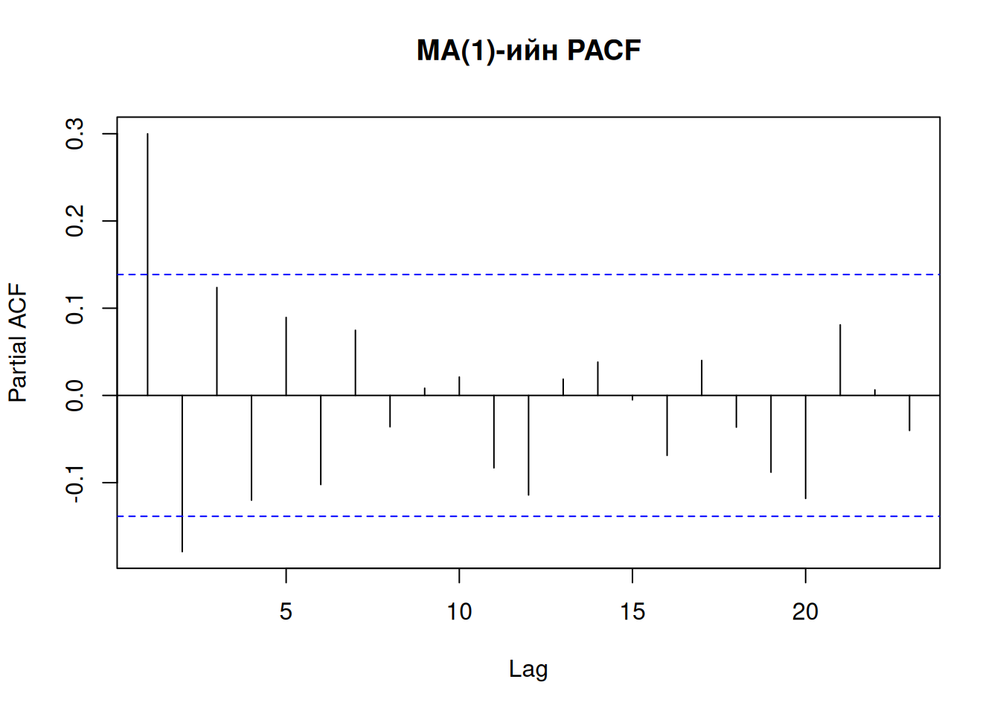
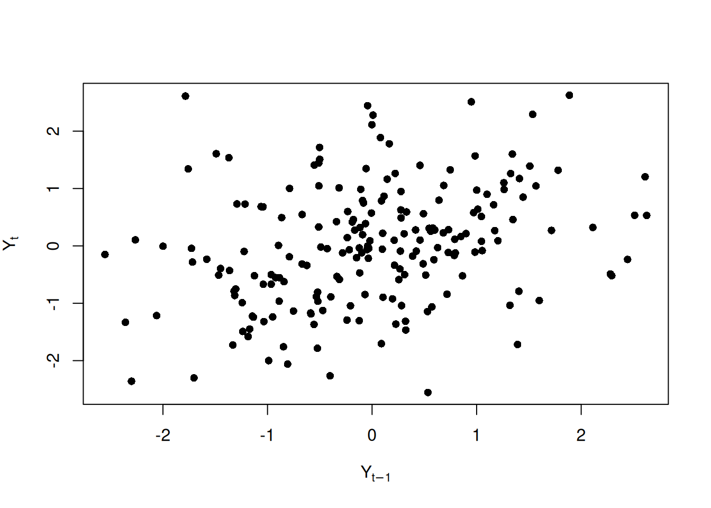
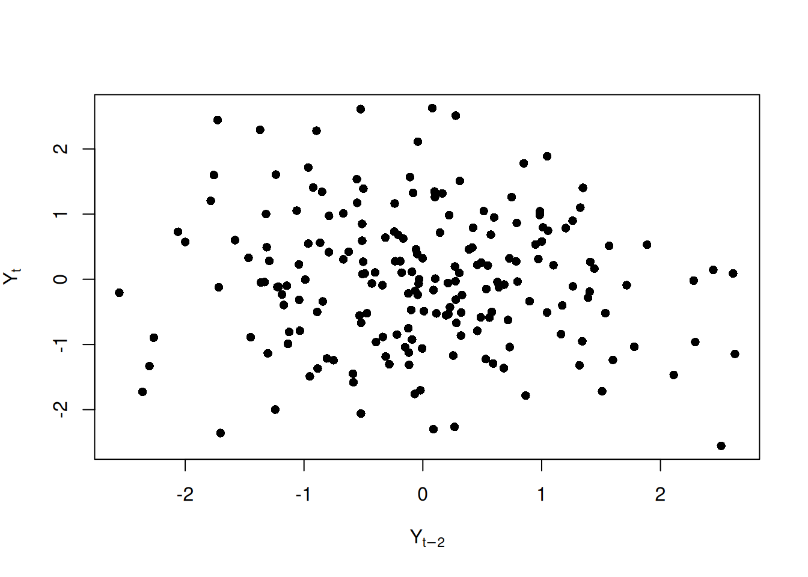
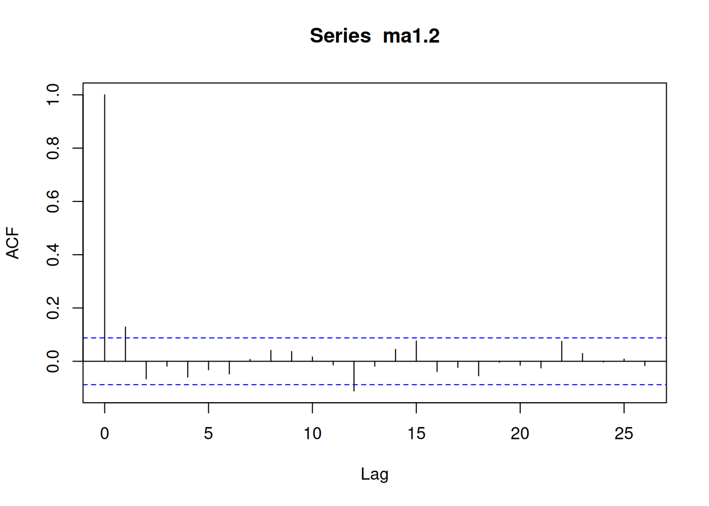

set.seed(123)
ma1 <- arima.sim(
model=list(ma=.5),
n=200
)
plot.ts(
ma1,
main=expression(MA(1)~with~theta==0.5),
ylab=expression(Y[t])
)
The MA(1) model is the simplest moving average process.
Unlike an autoregressive model, an MA(1) process does not depend directly on past observations. Instead, it depends on the current and previous random shocks.
The MA(1) model is fundamental in time series analysis and serves as a building block for higher-order MA and ARMA models.
An MA(1) process is defined by
[ Y_t=t+{t-1}, ]
where
Taking expectations,
[ E(Y_t) = E(t) + E({t-1}). ]
Since
[ E(_t)=0, ]
it follows that
[ E(Y_t)=0. ]
Since the white noise terms are uncorrelated,
[ Var(Y_t) = Var(t+{t-1}), ]
which gives
[ Var(Y_t) = (1+2)2. ]
[ (0) = (1+2)2. ]
[ (1) = ^2. ]
[ (k)=0. ]
Therefore,
[ (k)= \[\begin{cases} (1+\theta^2)\sigma^2, & k=0,\\ \theta\sigma^2, & k=1,\\ 0, & k>1. \end{cases}\]]
Dividing by ((0)),
[ (1) = {1+^2}, ]
and
[ (k)=0, k>1. ]
This is the most important property of an MA(1) process.
The ACF cuts off after lag 1.
If
[ , ]
then
[ (1) = = 0.40. ]
If
[ , ]
then
[ (1) = . ]
This value should appear in the sample ACF.
For an MA(1) model,
[ Y_t=t+{t-1}, ]
invertibility requires
[ ||<1. ]
Invertibility ensures a unique representation of the process.
This condition plays a role similar to the stationarity condition
[ ||<1 ]
for AR models.
set.seed(123)
ma1 <- arima.sim(
model=list(ma=.5),
n=200
)
plot.ts(
ma1,
main=expression(MA(1)~with~theta==0.5),
ylab=expression(Y[t])
)
set.seed(123)
ma1neg <- arima.sim(
model=list(ma=-.5),
n=200
)
plot.ts(
ma1neg,
main=expression(MA(1)~with~theta==-0.5),
ylab=expression(Y[t])
)
acf(
ma1,
main="ACF of MA(1)"
)
Observe:
This cutoff behavior is the hallmark of an MA(1) process.
pacf(
ma1,
main="PACF of MA(1)"
)
Unlike the ACF, the PACF does not cut off.
Instead, it decreases gradually toward zero.
The relationship between
[ Y_t ]
and
[ Y_{t-1} ]
may be examined using a lag plot.
plot(
x = ma1[-length(ma1)],
y = ma1[-1],
xlab = expression(Y[t-1]),
ylab = expression(Y[t]),
pch = 16
)
For positive (), the plot tends to exhibit a weak positive linear pattern.
For negative (), the pattern slopes downward.
Consider
[ (Y_{t-2},Y_t). ]
plot(
x = ma1[-c(length(ma1)-1,length(ma1))],
y = ma1[-c(1,2)],
xlab = expression(Y[t-2]),
ylab = expression(Y[t]),
pch = 16
)
Since
[ (2)=0, ]
the points should display little or no linear pattern.
The scatter plot generally resembles a random cloud.
| Property | AR(1) | MA(1) |
|---|---|---|
| Model | (Y_t=Y_{t-1}+_t) | (Y_t=t+{t-1}) |
| Stationarity | ( | |
| Invertibility | Not required | ( |
| ACF | Tails off | Cuts off after lag 1 |
| PACF | Cuts off after lag 1 | Tails off |
These patterns are central to Box-Jenkins model identification.
An MA(1) model can be estimated using maximum likelihood.
fit <- arima(
ma1,
order=c(0,0,1)
)
fit
Call:
arima(x = ma1, order = c(0, 0, 1))
Coefficients:
ma1 intercept
0.5124 0.0041
s.e. 0.0874 0.1018
sigma^2 estimated as 0.9091: log likelihood = -274.41, aic = 554.83The estimated value should be close to the true value used in simulation.
set.seed(123)
ma1.2 <- arima.sim(
model=list(ma=.2),
n=500
)
acf(ma1.2)
The theoretical lag-1 autocorrelation is
[ (1) = = 0.1923. ]
Compare this value with the sample ACF.
For an MA(1) process,
[ Y_t=t+{t-1}, ]
the one-step-ahead forecast depends on the most recent estimated shock.
For horizons greater than one,
[ Y_{t+h} ]
rapidly converges to the mean of the process.
Since the mean is zero,
[ Y_{t+h} . ]
The MA(1) process
[ Y_t=t+{t-1} ]
has the following properties:
[ E(Y_t)=0. ]
[ Var(Y_t) = (1+2)2. ]
[ (1) = , ]
[ (k)=0, k>1. ]
[ ||<1. ]
The ACF cutoff at lag 1 is the most important identifying characteristic of an MA(1) process.
arima() and compare the estimated parameter with the true value.